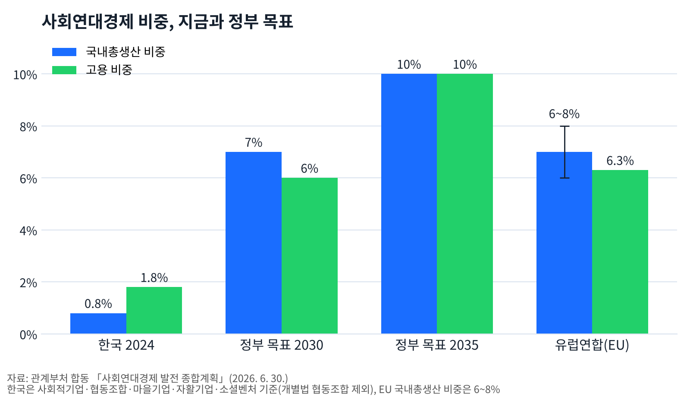
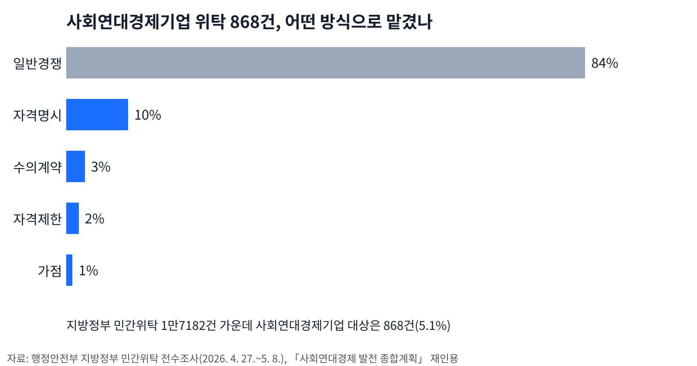
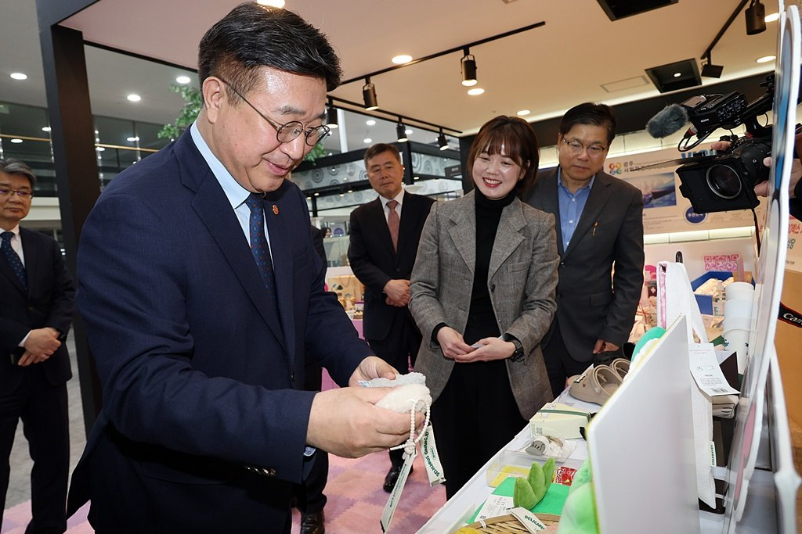
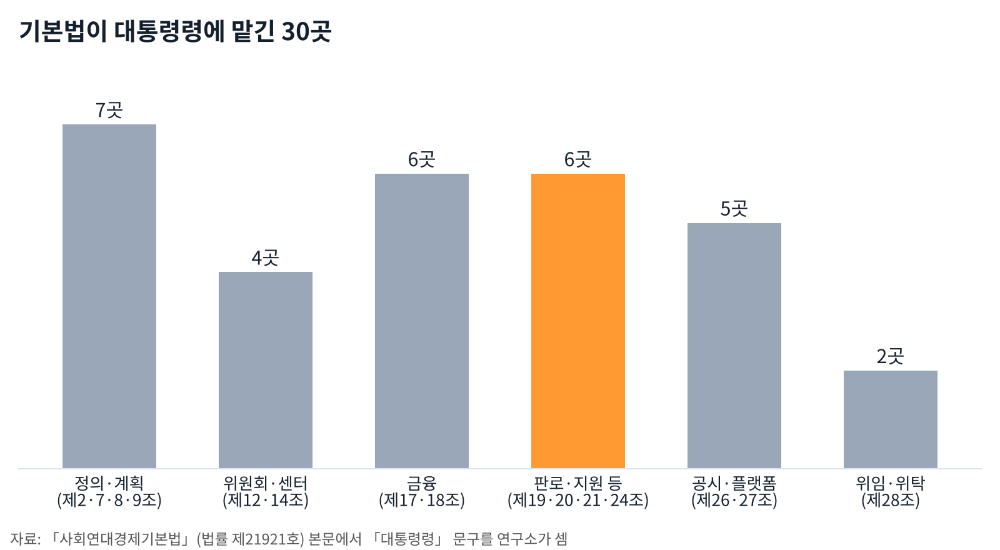
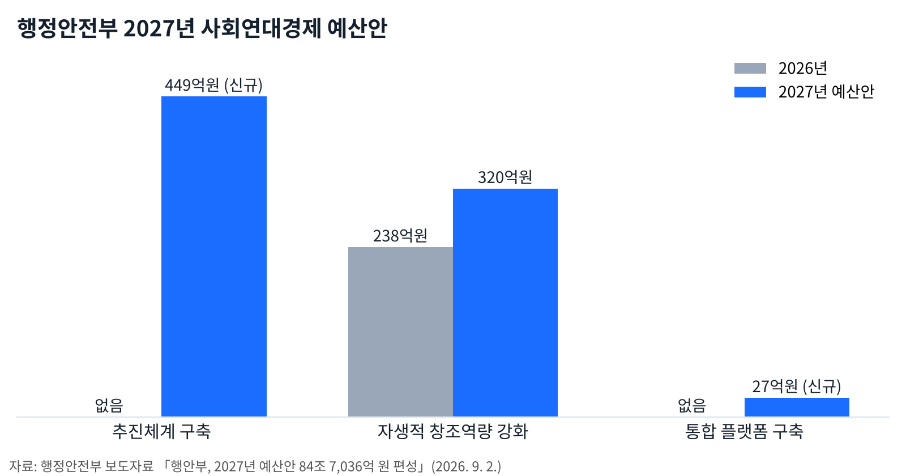
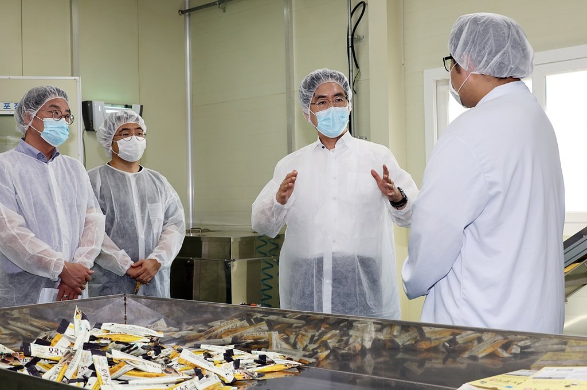
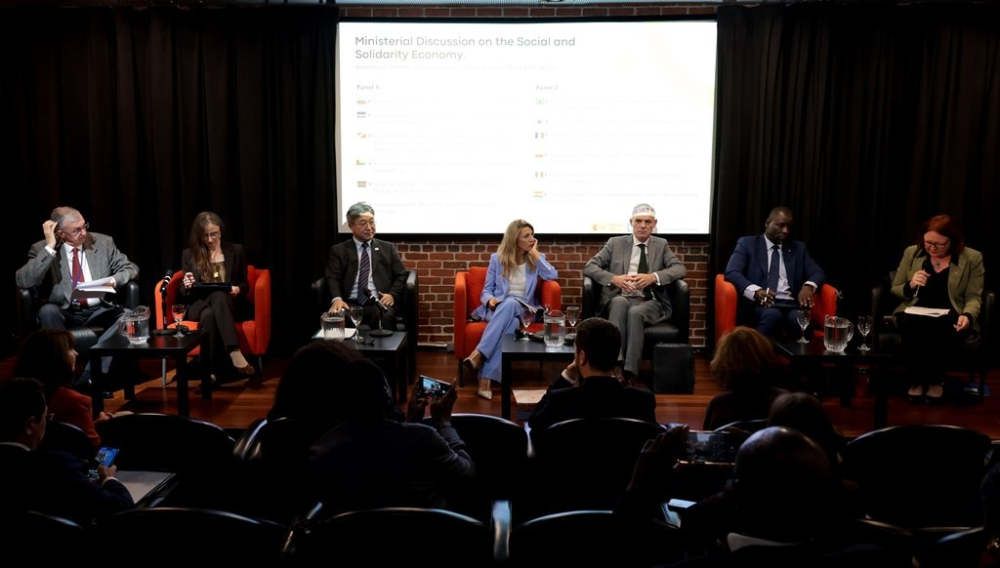
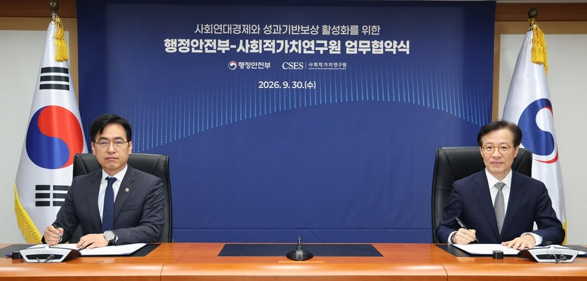

[사회연대경제] 국내총생산 0.8%를 10%로, 열쇠는 시행령 30곳
기본법 내년 3월 16일 시행, 대통령령에 맡긴 대목 30곳
위탁 5.1%·우선구매 3%대, 기준은 아직 빈칸
내년 예산 추진체계 449억원 신설, 시·도 계획도 시작
사회연대경제기본법이 2027년 3월 16일 시행된다. 정부는 국내총생산의 0.8%인 사회연대경제를 2035년 10%로 키우겠다는 목표를 세웠다. 그 길이 넓어질지는 법이 대통령령에 맡긴 30곳에서 갈린다.
공공기관이 사회연대경제기업 제품을 얼마나 사야 하는지, 공공서비스를 맡길 때 무엇을 먼저 보는지가 모두 시행령 몫이다. 행정안전부는 하위법령을 마련하고 있다고 밝혔다.

13년 만의 기본법, 13개 갈래를 하나로
국회는 2026년 8월 20일 본회의에서 「사회연대경제기본법」 제정안을 통과시켰다. 정부는 9월 15일 법률 제21921호로 공포했다. 2014년 첫 발의 뒤 13년 만이다.
그동안 사회적기업·협동조합·마을기업은 법과 부처가 따로였다. 행정안전부는 개별 정책을 아우르는 통합체계가 없어 정책 연계와 성장에 한계가 있었다고 밝혔다.
기본법은 이들을 「사회연대경제기업」 하나로 묶었다. 사회적기업, 협동조합, 마을기업, 자활기업, 소셜벤처에 농협·수협·신협·새마을금고·생협까지 13개 갈래가 여기에 든다(제2조제3호).
추진체계도 새로 선다. 대통령 소속 사회연대경제발전위원회가 5년마다 기본계획을 심의한다(제7조·제11조). 시·도는 이를 바탕으로 시·도기본계획을 세우고, 지역위원회에 지역 조직 대표를 넣어야 한다(제9조·제13조).
국내총생산 0.8%, 목표는 2035년 10%
관계부처 합동 「사회연대경제 발전 종합계획」을 보면 국내 사회연대경제는 국내총생산의 0.8%, 고용의 1.8%다(2024년). 유럽연합(EU)은 국내총생산의 6~8%, 고용의 6.3%다.
규모도 작다. 조직 평균 매출액은 약 5억8800만원, 평균 일하는 사람 수는 약 10.2명이다. 종합계획은 규모가 영세해 사회문제 해결 역할에 한계가 있다고 진단했다.
정부는 2026년 6월 30일 국무회의에서 이 계획을 확정했다. 목표는 사회연대경제의 국내총생산·고용 비중을 2030년 7%·6%, 2035년 10%·10%로 올리는 데 있다. 연매출 100억원 또는 고용 100명 이상 선도기업은 2035년 2000개로 늘린다.

돈줄도 넓힌다. 은행권 대출은 2026~2028년 4조3000억원 규모로 키운다. 신용보증기금 보증은 2025년 2500억원에서 2030년 3500억원으로, 미소금융은 연 60억원에서 150억원으로 늘린다.
위탁은 5.1%, 대부분 일반경쟁
판로는 아직 좁다. 행정안전부가 2026년 4~5월 지방정부 민간위탁을 전수조사했더니 1만7182건 가운데 사회연대경제기업에 맡긴 일은 868건(5.1%)이었다.
맡긴 방식도 84%가 일반경쟁이었다. 자격을 명시한 경우가 10%, 수의계약 3%, 자격제한 2%, 가점 1%였다. 사회연대경제기업을 따로 배려한 위탁은 열에 두 곳이 안 된다.

공공구매도 비슷하다. 공공기관의 사회적기업 제품 구매는 2024년 2조3312억원으로 총구매액의 3.08%다. 사회적협동조합은 5018억원, 0.88%다.

시행령 30곳, 우선구매 비율이 첫 쟁점
연구소가 법 본문을 세어 보면 「대통령령」에 맡긴 대목은 30곳이다. 우선구매·위탁·시설비 조항(제19~21조)에 걸린 것만 5곳이다.
첫째는 우선구매 비율이다. 법은 공공기관 구매계획에 「대통령령으로 정하는 비율 이상」의 구매목표를 담게 했다(제19조④). 종합계획은 구매 목표율에 따른 의무구매제도를 도입한다고 밝혔다.
둘째는 공공서비스 위탁 때 우선 고려의 기준과 절차다(제20조②). 지방정부는 그 범위에서 조례를 만든다. 일반경쟁 84%가 얼마나 바뀔지가 이 기준에 달렸다.
해외는 기준을 숫자로 정했다. 영국은 중앙정부 조달 평가 총점의 10% 이상을 사회적 가치에 두게 했다. 2025년 10월 1일 뒤 시작한 조달부터 적용한다. 스페인은 정부가 1년 안에 유보 비율을 정하지 않으면 국가 공공부문이 지정 물품·용역 계약의 15%(전년도 기준)를 사회적 조직에 유보하게 했다.
셋째는 국유·공유재산을 쓰게 하는 방식과 사용료 감면 폭이다(제21조②). 넷째는 법 목록 밖 조직을 사회연대경제기업으로 인정할 기준이다(제2조제3호하목).

예산은 내년부터, 시·도 계획도 시작
행정안전부의 2027년 예산안은 84조7036억원이다. 사회연대경제 추진체계 구축에 449억원을 새로 편성했다. 지역사회 자생적 창조역량 강화는 238억원에서 320억원으로 늘렸고, 통합 플랫폼 구축에 27억원을 새로 넣었다.

통합 플랫폼은 조직 정보를 모아 공시하는 전자정보시스템이다(제27조). 공시 의무(제26조)와 함께 2029년 9월 16일 시행된다.

지역도 움직인다. 종합계획을 보면 243개 지방정부 가운데 219곳이 관련 조례를 두었고, 14개 시·도가 지원센터를 운영한다. 행정안전부는 9월 7~8일 제주에서 지방정부·중간지원조직 담당자 160여명과 워크숍을 열었다.

인천에서는 현장이 먼저 뭉쳤다. 인천사회연대경제협의회가 2026년 5월 20일 제물포스마트타운에서 출범했다. 협의회는 사회적기업·자활기업·마을기업·공정무역·마을관리사회적협동조합 등 2000여 당사자 조직을 대변한다고 밝혔다.
협의회는 같은 날 박찬대 당시 인천시장 후보와 정책협약을 맺었다. 과제는 다섯이다. 사회연대경제 물류플랫폼 구축, 종사자 처우개선과 사회연대경제펀드, 흩어진 지원체계·예산 통합, 원도심 재생에 실행 주체로 참여, 인천형 사회주택 공급이다. 박 후보는 6월 3일 지방선거에서 인천시장에 당선됐다.
인천시는 11월 6일 「인천광역시 사회연대경제 발전 기본계획 수립 용역」을 공고했다. 2027~2031년 첫 법정 계획이다. 8개월 동안 주민·조직 1000명 이상과 전문가 50명 이상을 설문하고 심층면접을 거쳐 분야별 과제와 재원을 정한다. 시장이 맺은 다섯 과제가 첫 법정 계획에 어떻게 담길지가 이 용역에서 정해진다.
정부는 국제 무대로도 걸음을 넓혔다. 윤호중 장관은 9월 24~26일 뉴욕 유엔 사회연대경제 고위급 회의에 참석해 스페인·세네갈과 협력 양해각서를 맺었다. 10월 15일에는 15개국 39명이 참여한 국제교류회를 열었다.

다음 일정은 11월 27~29일 경기도 고양시 킨텍스에서 열리는 「제8회 대한민국 사회연대경제박람회 및 국제컨퍼런스」다. 기본법 시행까지는 넉 달 남짓 남았다.
참고문헌
- 「사회연대경제기본법」(법률 제21921호, 2026. 9. 15. 제정, 2027. 3. 16. 시행), 국가법령정보센터, https://www.law.go.kr/LSW/lsInfoP.do?lsiSeq=289577
- 관계부처 합동, 「사회연대경제 발전 종합계획」(별첨), 2026. 6. 30., https://fsc.go.kr/no010101/87220
- "관계부처 합동 「사회연대경제 발전 종합계획」 발표", 금융위원회 보도자료, 2026. 6. 30., https://fsc.go.kr/no010101/87220
- "「사회연대경제기본법」 국회 통과...지역·민생 문제, '함께 해결하는 경제' 열린다", 행정안전부 보도자료, 2026. 8. 20., https://www.mois.go.kr/frt/bbs/type010/commonSelectBoardArticle.do?bbsId=BBSMSTR_000000000008&nttId=128904
- "행안부, 2027년 예산안 84조 7,036억 원 편성...전년 대비 10.1% 증가", 행정안전부 보도자료, 2026. 9. 2., https://www.mois.go.kr/frt/bbs/type010/commonSelectBoardArticle.do?bbsId=BBSMSTR_000000000008&nttId=129203
- "「사회연대경제기본법」 시행 준비 본격화, 행안부, 전국 지방정부·현장 워크숍 개최", 행정안전부 보도자료, 2026. 9. 7., https://www.mois.go.kr/frt/bbs/type010/commonSelectBoardArticle.do?bbsId=BBSMSTR_000000000008&nttId=129305
- "윤호중 장관, 사회연대경제 고위급 회의 참석하고 스페인·세네갈과 협력 양해각서 체결", 행정안전부 보도자료, 2026. 9. 28., https://www.mois.go.kr/frt/bbs/type010/commonSelectBoardArticle.do?bbsId=BBSMSTR_000000000008&nttId=129777
- "세계 각국의 사회연대경제 리더들, 한국에 모여 지속가능한 성장을 논의한다", 행정안전부 보도자료, 2026. 10. 15., https://www.mois.go.kr/frt/bbs/type010/commonSelectBoardArticle.do?bbsId=BBSMSTR_000000000008&nttId=130220
- "제8회 대한민국 사회연대경제박람회 성공개최를 위한 민관공동추진위원회 출범", 행정안전부 보도자료, 2026. 9. 10., https://www.mois.go.kr/frt/bbs/type010/commonSelectBoardArticle.do?bbsId=BBSMSTR_000000000008&nttId=129415
- 인천광역시, 공고 제2026-2206호 「인천광역시 사회연대경제 발전 기본계획 수립 용역」 제안요청서·과업지시서, 2026. 11. 6., https://announce.incheon.go.kr
- 인천사회연대경제협의회, 출범식과 박찬대 인천시장 후보 정책협약 발표, 2026. 5. 22.
- 인천광역시, 민선9기 시장 누리집, https://www.incheon.go.kr/mayor_9
- Cabinet Office, "PPN 002: Taking account of social value in the award of central government contracts", 2025. 2. 13.(2025. 3. 5. 갱신), https://www.gov.uk/government/publications/ppn-002-taking-account-of-social-value-in-the-award-of-contracts/ppn-002-taking-account-of-social-value-in-the-award-of-central-government-contracts-html
- Junta Consultiva de Contratación Pública del Estado(스페인 재무부 공공계약자문위원회), 유보계약(공공계약법 추가조항 4) 보고서, 2026, https://www.hacienda.gob.es/dgpatrimonio/junta%20consultiva/informes/informes2026/informe3426acmreservada4lcsp.pdf
사진·도표 출처
- [사진1] 행정안전부 사진자료실, 「윤호중 장관, 사회연대경제 정책 간담회」(2026. 6. 29.), 공공누리 제1유형(출처표시)
- [사진2] 행정안전부 사진자료실, 「윤호중 장관, 새마을금고 사회연대경제조직 전용 대출상품 출시 협약식 참석」(2026. 8. 28.), 공공누리 제1유형(출처표시)
- [사진3] 행정안전부 사진자료실, 「윤호중 행안부 장관, 사회연대경제 정책 현장 방문」(2026. 3. 25.), 공공누리 제1유형(출처표시)
- [사진4] 행정안전부 사진자료실, 「행안부, 사회연대경제박람회 및 국제컨퍼런스 민관공동추진위원회 출범식 개최」(2026. 9. 10.), 공공누리 제1유형(출처표시)
- [사진5] 행정안전부 사진자료실, 「김민재 차관, 사회연대경제 청년 일경험 사업현장 점검」(2026. 8. 7.), 공공누리 제1유형(출처표시)
- [사진6] 행정안전부 사진자료실, 「김민재 차관, 행안부-사회적가치연구원과 사회연대경제 활성화 업무협약」(2026. 9. 30.), 공공누리 제1유형(출처표시)
- [도표1~4] 경세제민 AI·경제 연구소 작성. 자료 관계부처 합동 「사회연대경제 발전 종합계획」(2026. 6. 30.), 행정안전부 2026년 지방정부 민간위탁 전수조사(종합계획 수록), 「사회연대경제기본법」 본문(연구소 집계), 행정안전부 2027년 예산안 보도자료
© 경세제민 AI·경제 연구소. 인용할 때는 출처를 밝혀 주십시오.